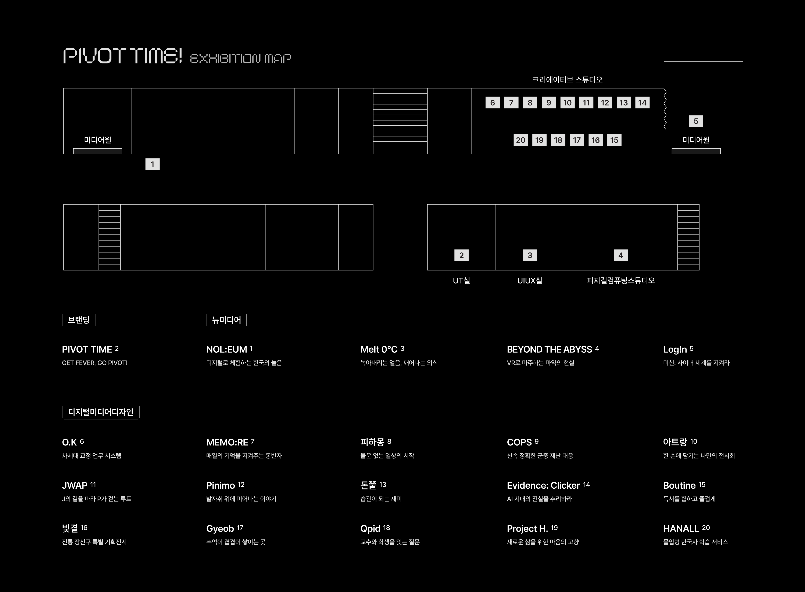
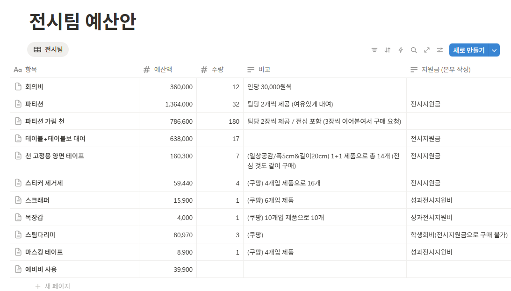
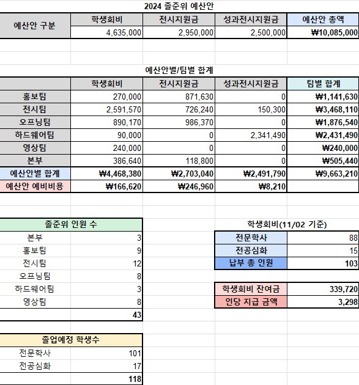
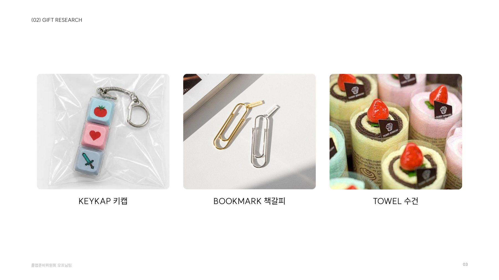
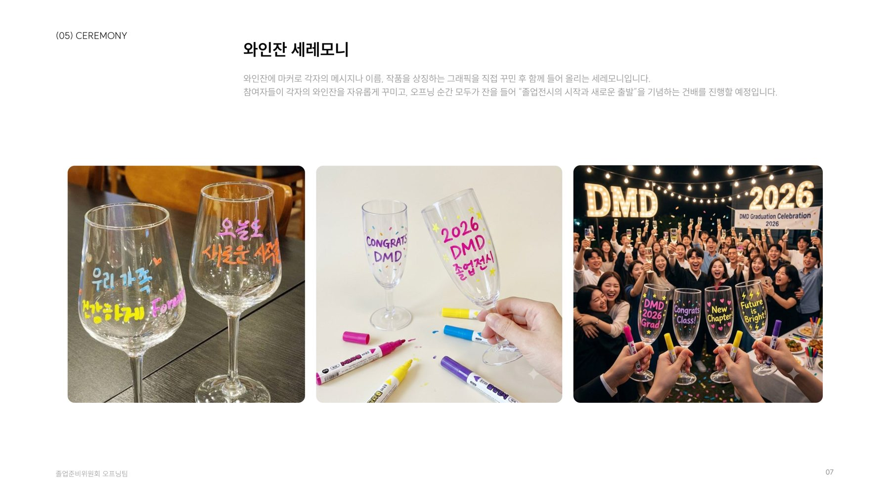
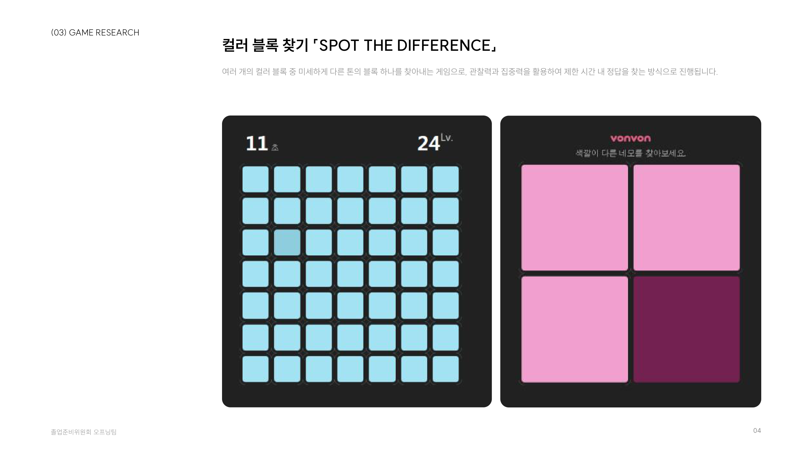

2026 졸업전시 준비
오늘 정리한 내용은 학과장님께 보고하고 승인을 받은 뒤 절차에 따라 시행합니다.
| 팀 | 마지막 기록 | 기록상 진행 내용 | 금일 확인 사항 |
|---|---|---|---|
| 본부 | 9/4 | 총무 변경: 권나영 총무 팀장(브랜딩 겸임), 이준 팀원 | 담당 지정(9/11 마감) · 서약서 수합 결과 |
| 브랜딩 | 9/29 | 주제 · 비주얼 방향 정리 (금일 발표), 기획서 보강, 포스터 시안 2종, 웹 구현 진행 | 1차 촬영 대상 · 장소, 졸업생 설문 공유, 인쇄물 목록 |
| 전시 | 9/9 | 역할 분담, 수요일 18시 정기회의, 공간 실측 · 기기 1차 조사 시작 | 역할 분담 최종본, 실측 결과, 배치도 일정 |
| 하드웨어 | 없음 | — | 장비 · 장소 · 예산 통합 설문 준비, 학과 / 팀별 부담 분류 |
| 영상 | 없음 | — | 인터뷰 · 오프닝 영상 계획, 브랜딩 촬영과 합칠지 |
| 오프닝 | 9/8 | 화요일 18시 회의, 목요일 이아람 교수님 보고, 아이디어 리서치, 10~11월 일정표 | 브랜딩 반영 컨셉, 공간 · 동선, 예산안 시점 |
뉴미디어든 어느 부문이든 미리 우선권을 갖지 않습니다.
전시 내용에 따라 교수님 승인으로 결정합니다.
졸준위는 안을 만들어 보고하고, 승인은 교수님이 하십니다
"전시팀이 장소를 이미 정했다"는 이야기가 돌고 있습니다.
"졸준위 참여 인원 2순위 우선권"은 적용하지 않습니다.
부문이나 졸준위 참여 여부가 아니라, 전시 내용 하나의 기준으로 판단합니다.

2025 배치도 (PIVOT TIME)
| 번호 | 2025 별도 공간 | 사용 팀 |
|---|---|---|
| 1 | 5층 강의실 | 뉴미디어 |
| 2 | UT실 | 브랜딩 |
| 3 | UIUX실 | 뉴미디어 |
| 4 | 피지컬컴퓨팅스튜디오 | 뉴미디어 (VR) |
| 5 | 크스 안쪽 미디어월 | 뉴미디어 |
| 6~20 | 크리에이티브 스튜디오 부스 | 디지털미디어디자인 15팀 |
별도 공간 5곳 = 뉴미디어 4팀 + 브랜딩 1팀
2022년에는 영상 3팀도 별도 공간에서 상영했습니다.
부문과 작년 사례로 보면 후보는 최대 8팀, 작년 별도 공간은 5곳입니다. 그래서 전시 내용을 근거로 한 안이 필요합니다.
| 팀 (팀장) | 부문 | 인원 | 졸준위 | DIMO | 공간 관련 참고 |
|---|---|---|---|---|---|
| 1팀 (이한숲) | 브랜딩 | 8 | 8 | — | 작년 브랜딩은 UT실 |
| 6팀 (손예찬) | 신규 콘텐츠 기획 · 제안 | 7 | 0 | 1 | 하드웨어 장비 다수 사용 |
| 12팀 (조강희) | 체험 · 실감형 | 8 | 3 | — | 작년 같은 부문은 별도 공간 |
| 13팀 (이채연) | 체험 · 실감형 | 7 | 1 | — | 〃 |
| 14팀 (홍성주) | 체험 · 실감형 | 8 | 0 | 0 | 〃 |
| 15팀 (전영서) | 체험 · 실감형 | 7 | 1 | 2 | 〃 |
| 16팀 (정시진) | 영상 | 6 | 0 | 1 | 2022 영상은 별도 공간 상영 |
| 17팀 (김우성) | 영상 | 7 | 0 | 0 | 〃 |
※ 위 표는 부문과 작년 사례로 추린 후보입니다. 별도 공간이 필요한 팀은 조사 차원에서 통합 설문으로 한 번 더 파악합니다.
※ 실제 필요 여부는 각 팀의 장비 목록 · 공간 요구사항으로 판단합니다. 올해 사용 가능한 공간 목록은 조교님께 확인이 필요합니다.
졸준위는 아래 항목을 설문으로 받아 전시 내용상 공간이 얼마나 필요한지 정리하고, 그 근거와 함께 교수님께 보고합니다.
| 판단 항목 | 내용 | 설문으로 받을 근거 |
|---|---|---|
| 장비 규모 | PC · 프로젝터 · 대형 모니터 · 센서 등 수량과 크기 | 장비 목록 (모델 · 수량 · 크기) |
| 전력 | 필요 콘센트 수, 동시 사용 전력 | 장비별 소비 전력 |
| 암전 · 조명 | 프로젝션 · 영상 상영 등 빛 차단 필요 여부 | 연출 설명 |
| 소리 | 사운드가 주변 부스에 영향을 주는지 | 스피커 사용 여부 |
| 면적 · 동선 | 체험 공간, 관람객 대기 동선 | 배치 스케치 · 필요 면적 |
| 최종 승인 | 전시 내용을 검토한 뒤 교수님이 승인 | 졸준위 우선순위 안 + 설문 자료 |
하드웨어팀은 이번 장비 조사에서 예산 내역(예산 파악용)과 함께 희망 전시 공간, 공간에 제약이 있는 콘텐츠인지도 파악합니다. 체크리스트 5 · 6 · 7번을 한 번에 받습니다.
| 항목 | 받을 내용 |
|---|---|
| 기본 | 팀명 · 전시 / 하드웨어 담당 · 연락처 |
| 장비 | 장비명 · 모델 · 수량 · 크기 |
| 조달 방식 | 보유 / 학과 대여 / 외부 대여 / 구매 |
| 예산 | 단가 · 합계 · 견적 링크(또는 캡처) |
| 사용 목적 | 작품에서 어떻게 쓰는지 |
| 공간 조건 | 면적 · 암전 · 콘센트 수 · 소리 · 벽면 |
| 희망 전시 공간 | 원하는 전시 공간과 그 이유 |
| 공간 제약 | 특정 공간이 아니면 전시가 어려운 콘텐츠인지, 그 이유 |
예산 내역을 내지 않은 팀은
장비 지원과 공간 검토에서
우선순위가 뒤로 밀릴 수 있습니다.
각 팀에서 감안해 기한 안에 제출해 주세요.
일정 (제안)
| 10/2(금) | 설문 배포 |
|---|---|
| 10/4(일) 23:59 | 설문 마감 |
| 10/5(월) | 하드웨어팀 분류 · 예산 추정 |
| 10/6(화) 13:00 | 졸준위 검토 |
| 구분 | 기준 | 예시 (초안 · 하드웨어팀이 확정) |
|---|---|---|
| 학과 부담 · 공통 | 전시장 기본 설비, 2팀 이상 함께 쓰는 것 | 파티션 · 테이블 · 천, 멀티탭 · 연장선 · 케이블, 같은 기종 모니터 · TV · 프로젝터 일괄 대여, 거치대, 설치 공구 |
| 학과 보유 장비 | 학과에 이미 있는 기자재 (비용 없음) | 보유 목록과 수량을 조교님께 확인 |
| 팀별 자부담 | 특정 작품에만 필요한 것 | 센서 · 보드 · 컨트롤러, 작품 전용 소품 · 제작물, 개인 PC · 노트북, 소모품 |
| 판단 필요 | 한 팀만 쓰는 고가 장비 | VR 기기, 대형 프로젝터 등 → 교수님과 협의 |
① 공통 항목 목록 · 합계 ② 팀별 자부담 목록 (각 팀에 안내) ③ 판단 필요 항목 ④ 전체 추정 예산
준비 기간 중 리허설 · 촬영 등으로 어느 팀이 어떤 장소를 언제 쓸지 해당 팀들과 회의로 정합니다.
예: 10/27(화) 오프닝 1차 리허설 · 10/27~28 브랜딩 1차 촬영 (초안)
진행 절차 (제안)
문의한 팀에는 이미 안내했습니다 — "졸준위는 장비 · 장소 조사를 바탕으로 안을 만들어 교수님께 보고하고, 승인은 교수님이 하신다. 곧 설문을 진행한다."
| 참고 사항 · 팀별 정기 일정 | 요일 · 시간 |
|---|---|
| 전시팀 정기회의 | 수요일 18:00 |
| 오프닝팀 정기회의 (캡스톤 강의 후) | 화요일 18:00 |
| 오프닝팀 교수님 보고 | 목요일 |
| 학과회의 | 화요일 13:00 |
졸준위 1학년 도우미 모집을 진행합니다. 각 팀은 1학년을 어떻게 활용할지, 몇 명 정도 필요한지 정리해 주세요.
| 팀 | 1학년 활용 방안 (필요 업무) | 필요 인원 | 필요 시기 |
|---|---|---|---|
| 브랜딩 | |||
| 전시 | |||
| 하드웨어 | |||
| 영상 | |||
| 오프닝 | |||
| 본부 |
① 전시팀 역할 분담 · 자료마다 담당자가 다릅니다
| 역할 | 노션 회의록 | 9/5 PDF |
|---|---|---|
| 전시 배치 | 김유란 · 정서영 · 장현진 | 김유란 · 정서영 · 최승진 |
| 물품 관리 | 김규민 · 온서영 | 김규민 · 온서영 |
| 가이드라인 | 이주빈 · 최승진 | 이주빈 · 장현진 |
② 기기 조사 담당이 겹칩니다
| 전시 물품관리 | 팀별 사용 기기 1차 조사, 학교 보유 물품 (9/9) |
|---|---|
| 하드웨어팀 | 기자재 조사, 팀별 사용 기기 조사 (9/1 브리핑) |
| 제안 | 기기는 하드웨어, 가벽 · 테이블 · 천은 전시 |
③ 협조 체크리스트 현황
| No | 항목 | 상태 |
|---|---|---|
| 1 | 서약서 제출 | 확인 필요 |
| 4 | 전시 · 하드웨어 담당 지정 | 확인 완료 |
| 5·6 | 기기 · 사용 목적 조사 | 통합 설문 (안건 1) |
| 7 | 부스 공간 요구사항 | 통합 설문 (안건 1) |
| 8 | 작품 소개 자료 | 안건 6 |
| 9 | 촬영 · 인터뷰 일정 | 안건 6 |
각 팀이 다른 팀 · 본부에 요청할 내용
브랜딩 방향이 정해지지 않아 팀별로 전시 규모와 물품을 조사하지 못했습니다. 교수님과 상담해 일정을 아래와 같이 조정했고, 예산안은 각 지도교수님께 보고합니다.
인당 회비 = (총 소요 예산 − 전시지원금 − 성과전시지원금) ÷ 113명
2024 45,000원 × 103명 · 2025 60,000원 × 120명
품목 · 수량 · 단가 · 견적 출처 · 재원. 장비 비용은 하드웨어팀 통합 설문 결과로 반영
일정표의 "10/19 주 예산안 작성"을 앞당기기 (선물: 졸업생 113명 · 교수님 · 졸준위)
업체 계약금 · 선물 발주 → 지원금 선집행 가능 여부 조교님 확인 중
10/6 팀장 소집 → 10/13(화) 12:30으로 변경

작년 전시팀 예산안 (노션) · 항목 · 예산액 · 수량 · 비고 · 재원(본부 작성)

2024 예산안 · 재원별 · 팀별 합계
브랜딩팀이 정리한 2026 졸업전시 브랜딩 자료를 공유합니다.
발표 후 각 팀의 질문과 의견을 받습니다.
함께 확인할 것
대상 · 장소 · 타임테이블, 17팀 공지 시점
17팀에서 받을 양식과 기한
팀장방 공유 여부

선물 후보 · 키캡 · 책갈피 · 수건

와인잔 세레모니

2부 게임 · 컬러 블록 찾기 (Kahoot도 후보)
| 항목 | 검토할 점 |
|---|---|
| 수건 | 작년 선물(자수 타올 "Get Fever, Go Pivot!")과 겹침. 브랜딩 방향과 어울리는지, 주문 제작 기간 2~3주 |
| 와인잔 | 작년 전시장 규칙 "액체 금지" · 교내 음주 규정 · 유리잔 파손 위험 · 행사 장소 |
| Kahoot | 작년 2부 게임과 같음. 113명 이상 진행 장비 |
| 초대장 | 브랜딩 협업 · 2부 추첨권. 인쇄 일정 · 예산 포함 여부 / 선물 대상 교수님 인원 확정 |
회의록 현황 (9/30 기준)
| 팀 | 기록 |
|---|---|
| 브랜딩 | 9/4 · 9/7 · 9/11 · 9/29 (노션) |
| 전시 | 9/5 · 9/9(작성 중), 이후 없음 |
| 오프닝 | 9/1 · 9/8, 이후 없음 |
| 하드웨어 | 없음 |
| 영상 | 없음 |
회의 후 48시간 안에 노션 + 공유 폴더
양식 통일: 안건 · 결정 · 담당 · 기한
팀별 진행 상황 10/11(일)까지 본부 제출
매주 팀별 진행 상황 정리 → 학과회의에 맞춰 조교님께 전달
※ 설치 · 철거 날짜는 작년 요일 기준 추정입니다. 크리에이티브 스튜디오 대관 기간은 조교님께 확인하겠습니다.
| 안건 | 결정 내용 | 담당 | 기한 |
|---|---|---|---|
| 1 장소 | |||
| 2 고정 일정 | |||
| 3 1학년 | |||
| 4 역할 · 요청 | |||
| 5 회비 | |||
| 6 브랜딩 | |||
| 7 오프닝 | |||
| 8 운영 |
수고하셨습니다!
다음 팀장 회의 · 결정된 고정 일정